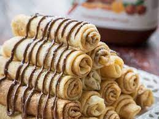

A Crepe Recipe

Crepes and why they are delicious -
Crepes have been served as my favorite dish since I was a small boy. My mom would make dozens of them. Since I had 4 siblings, there never seemed to be enough of them.
My brother and I would have contest on who could eat the most, and we'd usually leave the dinner table stumbling to the couch, trying not to barf from the amount of
dough we just consumed. Below I give you the recipe like my mom has been making it for the last 28 years. I hope you will enjoy it.
Ingredients
- 1 cup all-purpose flour
- 2 large eggs
- ½ cup milk
- ½ cup water
- ¼ teaspoon salt
- 2 tablespoons butter, melted
Steps
- Whisk flour and eggs together in a large mixing bowl; gradually add in milk and water, stirring to combine. Add salt and melted butter; beat until smooth.
- Heat a lightly oiled griddle or frying pan over medium-high heat. Pour or scoop the batter onto the griddle, using approximately 1/4 cup for each crêpe. Tilt the pan with a circular motion so that the batter coats the surface evenly.
- Cook until the top of the crêpe is no longer wet and the bottom has turned light brown, 1 to 2 minutes. Run a spatula around the edge of the skillet to loosen the crêpe; flip and cook until the other side has turned light brown, about 1 minute more. Serve hot.